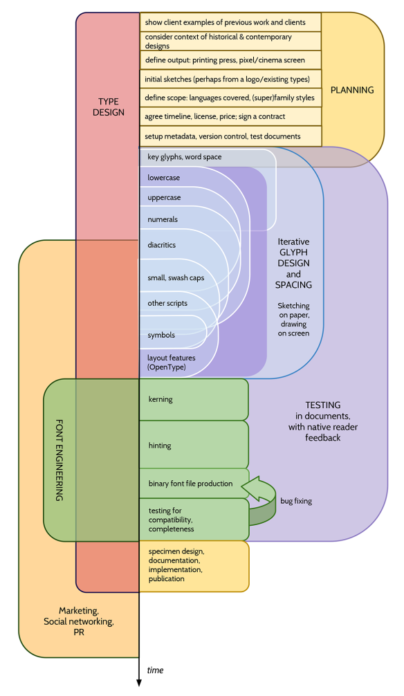

Планирование проекта
Теперь, когда представление о том, как может варьироваться дизайн шрифта, решить, будет ли в проекте только один шрифт, или это будет коллекция из нескольких взаимосвязанных шрифтов, или (теперь традиционный). Семья из трех или четырех стилей, а может быть, и что-то еще большее.
Общие стили семейств шрифтов включают:
- Обычный и жирный шрифт
- Regular, Bold, Italic — в конце концов с Bold Italic
- Thin, Light, Book, Regular, Semi-Bold, Bold, Extra-Bold, Heavy и Black
- Regular, Condensed, Bold и Bold Condensed
- Narrow, Condensed, Wide и Extra Wide
- Regular, Semi-Flourished, Flourished, Very Flourished, Extremely Flourished.
Хотя существуют причины, по которым существуют типичные модели поведения в семьях, обнаружить, что нужна совсем другая группировка.
Масштаб проекта может определяться исключительно амбициями и количеством свободного времени, которое есть. Но объем проекта часто определяется предполагаемым использованием коллекции или семейства шрифтов или, что еще более важно, потребностями клиента. Конечно, для профессиональных дизайнеров шрифтов последние два аспекта обычно являются определяющими факторами.
Feeling
Самое важное в шрифтовом дизайне — ощущение, которое вызывается. Это, как известно, трудно выразить словами, но именно это отличает конкретный шрифт от любого другого.
Шрифтовой дизайнер в Portugal, Natanael Gama, разработал Exo family с FontForge. На своей домашней странице описывает еще один проект скульптора John Williams и включает графику, показывающую его краткое описание в матрице континуумов чувств:
- От фигуративного к абстрактному 50%
- От изящного к прочному: 30%
- От спокойного к энергичному: 0%
- Загадочно до простоты: 15%
- Экспериментальное к стандартному: 15%
- От престижного к обычному: 15%
- Другие идеи: Beautiful, Outside Spaces, Human Condition
Glyph покрытие
Шрифт остается шрифтом, даже если имеется только один глиф. Но шрифт также может содержать несколько сотен или даже тысяч символов. Если проект инициирован самостоятельно, то этот выбор в конечном итоге произволен. Решить, что нужны только заглавные буквы или задача включить глифы из других используемых вами шрифтов. Если выполнять работу для клиента, возможно, задача уточнить, какой язык или языки поддерживает шрифт. Целью также может быть расширение существующего шрифта, добавление нескольких глифов, чтобы работало на одном или нескольких дополнительных языках.
Конечно, было бы хорошей идеей сделать этот выбор сознательно и ошибиться в сторону включения меньшего, а не большего. Часто при создании шрифта может возникнуть соблазн включать все больше и больше глифов, но зачастую более ценно продолжать улучшать основной набор глифов, а не добавлять новые.
Мультистильное семейство рабочий процесс
Если с самого начала извечно, что будет более одного шрифта, сэкономить время, если будут планы и создавать семейство шрифтов систематически и работать над стилями параллельно, а не создавать один стиль за раз.
Конечно, невозможно создать стиль every полностью параллельным образом, но можно выполнить определенный этап проектирования для каждого стиля. Позволяет проанализировать взаимосвязи между стилями на ранних этапах процесса. Обнаружить, что полезно заполнить один полный набор тестовых букв (например, “adhesion”) для обычной версии, а затем создать такой же набор тестовых букв в других стилях. Однако также можно применить более детальный подход и принять решения относительно конкретных частей базовых букв (например, ‘n’ и ‘o’) для всех стилей.
В зависимости от размера и состава планируемого семейства шрифтов вы можете обнаружить, что создание экземпляров глифов, которые можно интерполировать, позволяет сэкономить время. Это не только позволяет интерполировать промежуточные стили, но также помогает сделать выбор в отношении типографских переменных, которые меняются между членами семейства.
Обзор типографских переменных, которые следует принять во внимание, в главе “Что такое шрифт?”.
Техническое: Управление версиями
Следует научиться использовать Git и GitHub для хранения файлов и использовать формат “SFDir” для своих источников.
- https://help.github.com/articles/what-are-other-good-resources-for-learning-git-and-github
- http://justinhileman.info/article/git-pretty/
Общий процесс
Еще в 2010 году Дэйв Кроссланд, Эбен Соркин, Клаус Эггерс Соренсен, Пабло Импаллари, Алексей Ваняшин, Дэн Ратиган и другие участники Anonymous разработали общую схему процесса для латинских шрифтов:

Это было сделано с помощью Google Drawings, и, как и этот сайт, он распространяется по лицензии Creative Commons Attribution-ShareAlike. Источник — здесь.
Версия для нелатинских проектов (деванагари) также доступна по адресу здесь.
Тестовые среды
При планировании проекта учитывать предполагаемые носители шрифта. Примерами носителей являются веб-платформы и мобильные платформы, цифровые проекторы, дешевые офисные струйные и лазерные принтеры, высококлассные лазерные принтеры типографии, офсетная литографическая печать журналов и высокоскоростная печать больших тиражей газет.
Затем следует попытка приобрести или организовать доступ к этим технологиям набора текста, чтобы увидеть реальные результаты своей работы.
На протяжении всего процесса разработки шрифта вам будет очень полезно предварительно просмотреть набор текста с использованием вашего (прототипа) шрифта в разрешении, превышающем разрешение экрана вашего ноутбука или рабочей станции. Обычно это означает лазерный принтер с “true” 1200 DPI и Adobe PostScript 3. Частные лица могут приобрести что-то подобное примерно за 00 долларов, и некоторые рекомендации 2013 года были следующими:
- HP P2055d
- Xerox Phaser 4510
- Xerox Phaser 5550
- Nashua/Ricoh P7026N
В мае 2013 года у студии Тип производства был аппарат Xerox 7525 с контроллером “fiery”, покупка которого стоила около 12 000 евро. Его можно арендовать за 300 евро в месяц вместе с тонером, запчастями и техническим обслуживанием. В конце 2015 года Октавио Пардо аналогичным образом арендовал Xerox Phaser 7100 за 30 евро в месяц.
Функции OpenType
Можно спланировать функции OpenType вашего проекта до того, как начнете рисовать. Общие особенности включают в себя:
ligaлигатурыonum,lnumцифры
Для некоторых языков locl работает, а для других нет, поэтому лучше всего предоставлять формы,
специфичные для языка, через locl и ssNN или cvNN.
Спецификация OpenType допускает некоторые функции, которые не рекомендуются:
histПодробнее читать в этом discussion on TypeDrawers.
Дальнейшее чтение
- Презентация Аойф Муни о процессе шрифтового дизайна на TypeCon 2014: https://vimeo.com/107421895
- Обсуждение TypeDrawers Рекомендации принтеру по пробной печати